Conditional Probability#
Probability is merely a guess. It is based on whatever currently available information we have. If new information about the outcomes in the sample space becomes available, the probability assigned to the remaining events must be updated to take into account the new state of the world (or more accurately, knowledge of the new state of the world). Conditional probability is the tool for incorporating new information into probability calculations.
Motivation#
Let A represent the event of selecting a ball numbered 2. Let B represent the event of selecting a red ball. Then 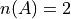, 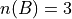 and  (Why?) Without taking into account the second part of the problem yet, the Classical Definition of Probability yields the probability the ball she selected has the number 2 written it,
(Why?) Without taking into account the second part of the problem yet, the Classical Definition of Probability yields the probability the ball she selected has the number 2 written it,
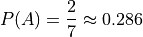
This number represents the probability of A without any further information provided about the sample space.
If the friend now informs us the ball she selected was red, then this new information affects the probability. Certain outcomes have been removed from the sample space and are no longer possible. Because your friend revealed the color of the ball, we can discount all outcomes that involve the four green balls numbered 1 - 4. This type of Reduction of Sample Space is called conditioning on the event B. The event of A given B is denoted 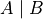
Applying the Classical Definition of Probability to this reduced sample space, we get the probability of selecting a ball with the number 2, given the ball is red,

In other words, knowing the event a red ball was selected has increased the probability the ball has the number 2 written onit. Taking a look at the original sample space, this should be intuitive. There are less red balls than green balls, so more probability is “concentrated” in the red number 2 ball when the green balls are removed from the sample space.
In order to further understand what is going, return to the point in time when your friend has not yet revealed the color she has selected, i.e. before the information the ball is red has become available. Before you know the ball is red, the probability of it being red is given by,

The probability of it being red and having the number 2 written on it is the probability of the Intersection of A and B. Noting  has only outcome in it (Why?), the outcome of a red ball with the number 2 has a probability,
has only outcome in it (Why?), the outcome of a red ball with the number 2 has a probability,
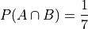
If the event B has occurred, then the only way the event A can now occur is through the event  . The conditional probability of A given the occurrence of B is the ratio of ways A and B can occur to the ways B alone can occur,
. The conditional probability of A given the occurrence of B is the ratio of ways A and B can occur to the ways B alone can occur,

Condtional Probability Formula#
Abstracting from the details from the previous example, the conditional probability of an event A given the occurrence of an event B is defined by the following formula,

An equivalent formula is given in terms of the Cardinality of the sets and B,

Note
It is important to keep in mind that conditional probability is a definition. It is not an axiom of probability.
In mathematics, axioms represent the necessary assumptions for deriving a corpus of knowledge through syntactical rules: the initial starting points from which theorems are deduced.
A definition is semantical in nature, insofar that it expresses the opinion of the definer that the thing being defined is deserving of special notice, for it delineates a special concept that (hopefully) corresponds in some way to the observer’s intuitive notions about reality.
Reduction of Sample Space#
TODO
Formula#
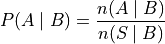
The following example and its accompanying solutions serve to illustrate how conditional probability and the reduction of the sample space can be used to solve problems involving probability. Either method yields the correct answer.
Monty Hall Problem#
TODO
Probability Tables Revisited#
TODO
Bayes’ Laws#
The most important theorems regarding conditional probability are known collectively as Bayes’ Laws.
Multiplication Law#
The conditional probability formula can be rearranged with the aid of some simple algebra,
This version of the conditional probability formula along with the technique of Reduction of Sample Space give us an alternate approach for understanding certain probability problems. Often, we need to know the probability of a complicated compound event, which usually involves cumbersome combinatorial analysis. Conditional probability can be used to sidestep these calculations.
The following example illustrates the simplification affected by the introduction of conditional probability into combinatorial problems. This example can be solved in one of two ways. The first solution uses the techniques from the Combinatorics section. The second solution uses the techniques of the Multiplication Rule and Reduction of the Sample Space just discussed. The reader will observe, while both methods yield the same answer, the second method is substantially easier, both from a calculation perpsective and from a conceptual perspective (i.e., it’s easier to understand).
Note
Solution #1: Combinatorics
The total number of two-card hands dealt from a deck of 52 cards is equal to the number of combinations of 52 distinct objects taken 2 at a time. To find the total number of such combinations, the Formula is used,

Therefore, there are a total of 1326 hands that can be dealt.
The same logic can be used to find the number of ways to pick two red cards. Note there are  red cards in a standard deck of playing cards. Therefore, the number of combinations of 26 distinct objects taken 2 at a time is,
red cards in a standard deck of playing cards. Therefore, the number of combinations of 26 distinct objects taken 2 at a time is,
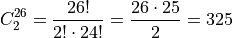
Therefore, the desired probability can be found using the Classical Definition of Probability,
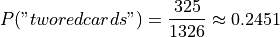
Note
Solution #2: Conditional Probability
Let R 1 represent the event the first card drawn is red. Let R 2 represent the event the second card drawn is red. Then the event  represents the event the first card is red and the second card is red. The Multiplication Rule states the probability of an intersection can be expressed as,
represents the event the first card is red and the second card is red. The Multiplication Rule states the probability of an intersection can be expressed as,

The term  is the probability of selecting a red card on the first draw. This can be calculated easily with the Classical Definition of Probability,
is the probability of selecting a red card on the first draw. This can be calculated easily with the Classical Definition of Probability,

The term  can likewise be quickly decomposed by noticing the event R 1 reduces the sample space to 51 cards, 25 of which are red. Using the Classical Definition of Probability once again, the conditional probability of R 2 given the occurrence of R 1 is,
can likewise be quickly decomposed by noticing the event R 1 reduces the sample space to 51 cards, 25 of which are red. Using the Classical Definition of Probability once again, the conditional probability of R 2 given the occurrence of R 1 is,
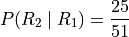
Therefore,
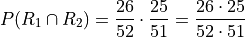

Law of Total Probability#
Before stating the Law of Total Probability, a corrollary is required.
Complementary Intersections#
In order to prove this corrollary, consider the following identity,

Now, by definition, and are mutually exclusive. Therefore, it follows from the Counting Theorems of set theory,

An application of the Classical Definition of Probability leads directly to the result of the corrollary,
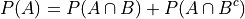
Total Probability#
Taking the Complementary Intersection corrollary from the previous section and applying the concepts of conditional probability to it, each term on the right hand side can be decomposed Bayes’ Multiplication Law,
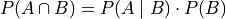
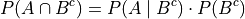
Plugging these definitions into the Complementary Intersection corrollary transforms the proposition into the Law of Total Probability,
The following example illustrates an application of the Law of Total Probability,
Note
Solution
TODO
Bayes’ Formula#
TODO
Tree Diagrams#
TODO
DO FALSE POSITIVE EXAMPLE, THOSE ARE ALWAYS FUN
Independence#
Definition#
Conditional probability allows the precise definition of independence and independent events. Intuitively, independent events are understood as events whose outcomes do not affect one another. If you flip a coin and then roll a dice, the outcome of the coin flip in no way determines the outcome of the die roll. In other words, the probability of one event does not alter the probability of the other event. Mathematically, this can be stated as follows,
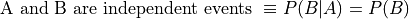
The knowledge that A has happened does not change the probability of B. The designation of A and B are arbitrary, so this also implies,

Multiplication Law#
The definition of independence leads to an important consequence. Bayes’ Multiplication Law states,

But if A and B are independent, then by definition 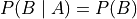,

This result is summarized in the following theorem,